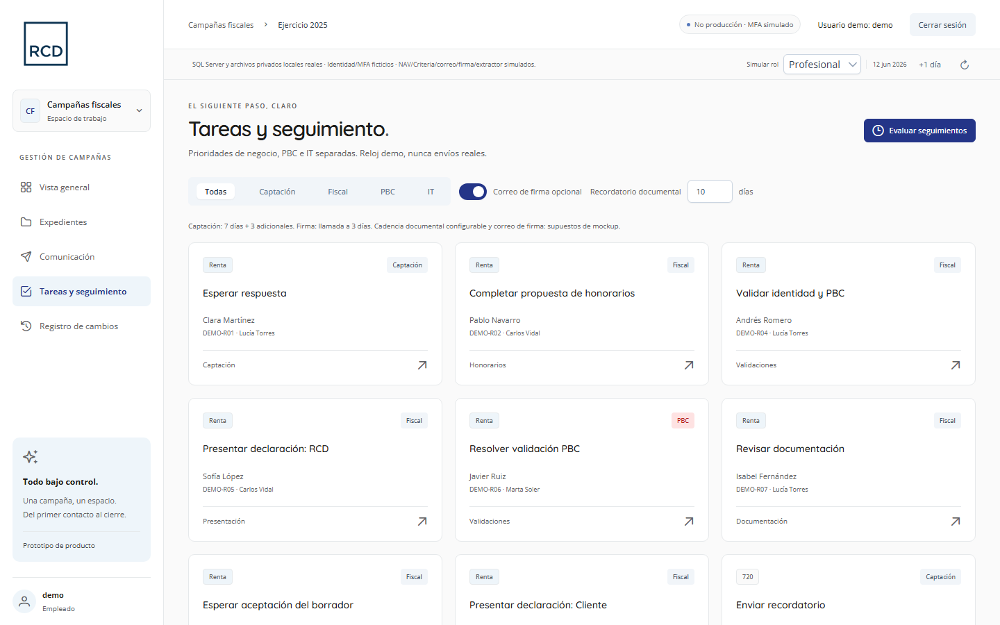
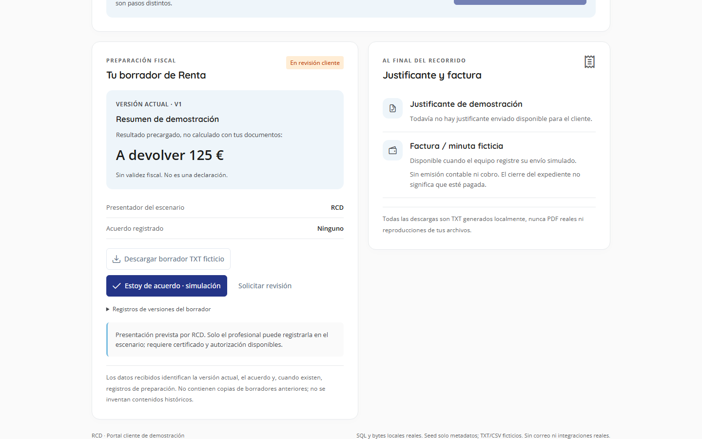
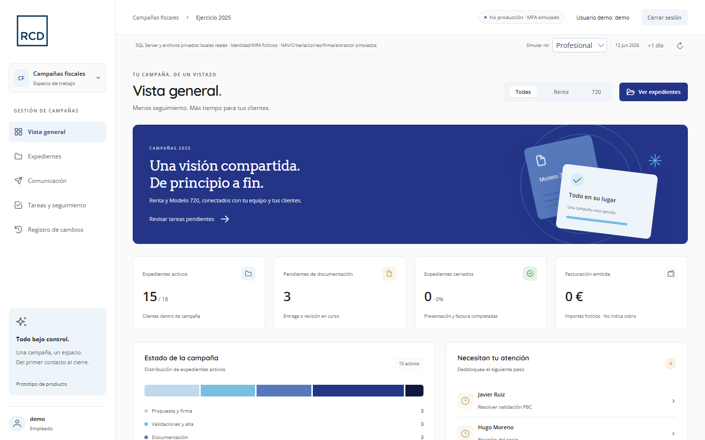

Operativos
Sobrecarga del equipo y pasos repetitivos que dependen de personas concretas.
Propuesta de proyecto a medida · RCD
Proponemos preparar una petición de proyecto que responda a vuestras necesidades. Este Mockup ayuda a concretar el alcance: comunicación, honorarios, validaciones, documentación, presentación y cierre.



01 · El punto de partida
Renta y 720 son procesos repetitivos y con un patrón claro, pero hoy dependen de correos, llamadas, hojas de cálculo y memoria del equipo.
Sobrecarga del equipo y pasos repetitivos que dependen de personas concretas.
Cuesta saber quién ha respondido o firmado y la subida de documentos no es fluida.
Riesgo de perder clientes por falta de seguimiento y poca capacidad para crecer.
Sin una fuente única de verdad: herramientas fragmentadas y reglas imposibles de automatizar.
02 · Alcance a definir con RCD
Definir campañas segmentadas, recordatorios y creación de expedientes a partir de la respuesta del cliente.
Diseñar el flujo por fases y roles: honorarios, validaciones, PBC, documentación, borrador, 720, presentación y cierre.
Concretar un espacio privado para responder, firmar honorarios, aportar documentos y aceptar el borrador.
03 · Reglas a validar con vuestros equipos
La PH nunca sale sola. El socio la revisa y el profesional la envía; si el cliente la rechaza, se renegocia con una nueva versión.
PBC e IT, separados. Una incidencia técnica del extractor no bloquea ni contamina la valoración de prevención de blanqueo.
El cliente decide cuándo entrega. Botón explícito de entrega de documentación y aviso inmediato a su profesional.
Alta en NAV y carga en Criteria controladas. Registro manual con fecha, versión y referencia, siempre trazado.
Avisos donde ya trabajáis. Definir los avisos al responsable y validar la integración con Teams para respuestas y entregas.
Cierre con evidencias. Presentación, justificante según quién presenta y factura enviada antes de cerrar.
04 · Beneficios a evaluar
Escenario ilustrativo a partir de los flujos «Rentas v7» y «720 v5». La petición deberá validar la situación de partida, los beneficios y cómo medirlos.
05 · Desarrollo sujeto a evaluación
El Mockup es una base para discutir necesidades y preparar la petición. El alcance, las integraciones, el presupuesto y los plazos se concretarán durante la evaluación del proyecto.
Campaña Modelo 720Declaración de enero a marzo
Campaña de RentaDeclaración de abril a junio
Referencia de 13–15 semanas desde el arranque aprobado, pendiente de alcance, recursos e integraciones.
06 · Siguiente paso
Contrastamos las pantallas con vuestros equipos para identificar necesidades, prioridades y reglas de negocio.
Documentamos objetivos, alcance, datos, integraciones y responsables, junto con los criterios de éxito.
Solicitamos la valoración del proyecto para concretar viabilidad, presupuesto, recursos y calendario antes del desarrollo.